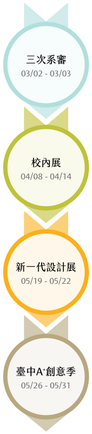

什麼是嘎嘎好農？
What's the Gaga Farming?
嘎嘎好農是一個友善農法的推廣平台。我們與泰雅族深耕德瑪汶協會合作，
透過可愛有趣的互動式網站設計及資訊圖表，推翻一般人對原住民的既定印象，希望能吸引更多人關注友善農法的議題，進而改善部落經濟。
我們的組員來自不同的科系，並專注在網頁、插畫、印刷、3D建模等不同的設計領域，我們相信一個跨領域的合作可以讓世界變得更美好！
團隊成員
Team Members
謝馥羽
Sie, Fu-Yu
網頁前端設計師
廖心慈
Liao, Hsin-Tzu
資訊圖表設計師
巫孜勤
Wu, Tz-Chin
插畫師
黃鼎驊
Huang, Ding-Hua
3D建模設計師
展覽資訊
Exhibition Info

特別感謝
Special Thanks
感謝以下師長及朋友們的指導及協助，才得以完成嘎嘎好農的製作。如果您的名字在名單中出現，且您不願意公開您的姓名，請私訊聯絡 facebook.com/gagafarming 粉絲團告訴我們，謝謝您。
國立臺中科技大學
趙樹人
蕭嘉猷
詹玉艷
邱旭蓮
侯純純
邱順應
涂以仁
張建祺
林承謙
邱義盛
洪祺森
紀明仁
黃雅卿
何佳勳
廖廷嶧
潘泰宇
蔡忠益
百岳國際
董冠伯
葉士豪
李冠緯
許家程
劉恩驛
曾貞寧
曹晉誠
邱彙傑
張德嫺
楊安琳
蕭穎晶
魏廷瑾
莊鈺屏
深耕德瑪汶協會
林建治
蘇文仙
張瑞芳
潘隆義
其他
林凱偉
郭承哲